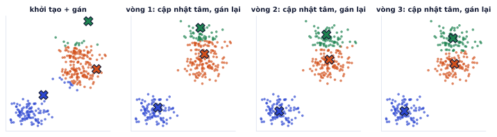
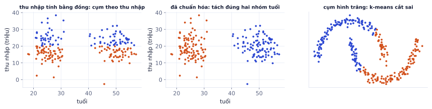
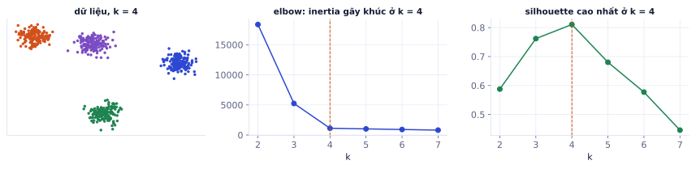
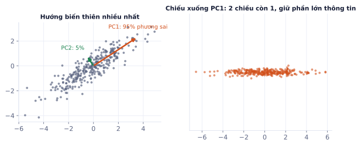
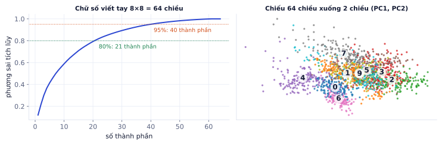

Không phải lúc nào cũng có nhãn. Học không giám sát tìm cấu trúc trong dữ liệu: nhóm khách hàng giống nhau, nén dữ liệu nhiều chiều để nhìn được. Bài này cũng dạy phần việc chiếm phần lớn thời gian thật của kỹ sư: chuẩn bị đặc trưng, gói gọn trong một Pipeline không rò rỉ.
Học không giám sát dùng để làm gì
Vì sao cần học
Dữ liệu có nhãn đắt (phải có người gán), dữ liệu không nhãn thì rẻ và nhiều. Những câu hỏi như "khách hàng của shop chia thành mấy kiểu?", "đơn hàng nào bất thường?", "dữ liệu 1.000 chiều này trông thế nào?" đều không cần nhãn.
Nhiệm vụ
Câu hỏi
Kỹ thuật trong bài
Phân cụm (clustering)
dữ liệu tự chia thành những nhóm nào?
k-means
Giảm chiều
nén nhiều đặc trưng thành ít đặc trưng mà giữ được thông tin?
PCA
Phát hiện bất thường
điểm nào khác hẳn phần còn lại?
khoảng cách tới tâm cụm, PCA reconstruction error
Khác với học có giám sát, ở đây không có đáp án đúng để so. Đánh giá phải dựa vào chỉ số nội tại (inertia, silhouette) và quan trọng hơn: kết quả có hữu ích cho người dùng không.
k-means
Vì sao cần học
k-means là thuật toán phân cụm phổ biến nhất vì đơn giản, nhanh trên hàng triệu điểm, và kết quả dễ diễn giải: mỗi cụm có một "tâm" là một khách hàng điển hình của nhóm đó.
Thuật toán
Chia n điểm thành k cụm sao cho mỗi điểm gần tâm cụm của nó nhất:
1. Chọn k tâm ban đầu (k-means++ chọn các tâm cách xa nhau)
2. Gán mỗi điểm vào tâm gần nhất
3. Cập nhật mỗi tâm = trung bình các điểm trong cụm
4. Lặp 2–3 tới khi tâm không đổi (hoặc đổi rất ít)

Ba tâm khởi tạo kém (dấu X). Mỗi vòng: gán điểm vào tâm gần nhất, rồi dời tâm về trung bình cụm. Sau 3 vòng các tâm đã nằm đúng giữa ba nhóm.
Ví dụ từng bước
Sáu điểm trên trục số: 1, 3, 5, 20, 22, 24, k = 2, tâm ban đầu c₁ = 1, c₂ = 3 (khởi tạo kém, hai tâm sát nhau).
Vòng 1, gán: điểm 1 về c₁; các điểm 3, 5, 20, 22, 24 gần c₂ = 3 hơn nên về c₂.
Dù khởi tạo kém, chỉ sau hai vòng đã ra hai nhóm hợp lý {1, 3, 5} và {20, 22, 24}.
Mục tiêu: inertia
k-means tối thiểu hóa inertia (tổng bình phương khoảng cách trong cụm):
inertia = Σ_cụm Σ_điểm trong cụm ‖x − tâm‖²
Bước gán và bước cập nhật mỗi bước đều không làm inertia tăng, nên thuật toán luôn dừng. Nhưng nó chỉ tìm được cực tiểu cục bộ, phụ thuộc tâm ban đầu. Vì vậy scikit-learn chạy nhiều lần với các khởi tạo khác nhau (n_init) và giữ kết quả có inertia thấp nhất.
importnumpyasnpfromsklearn.clusterimportKMeans# kiểm tra ví dụ 6 điểm ở trên, với đúng hai tâm khởi tạo kém 1 và 3x6=np.array([[1],[3],[5],[20],[22],[24]])km6=KMeans(n_clusters=2,init=np.array([[1.0],[3.0]]),n_init=1).fit(x6)print(km6.labels_,km6.cluster_centers_.ravel(),km6.n_iter_)# tâm 3 và 22# 400 "khách hàng" giả lập có 4 nhóm, 2 đặc trưng đã chuẩn hóafromsklearn.datasetsimportmake_blobsfromsklearn.preprocessingimportStandardScalerX,_=make_blobs(n_samples=400,centers=4,cluster_std=1.2,random_state=0)X_scaled=StandardScaler().fit_transform(X)km=KMeans(n_clusters=4,n_init=10,random_state=0).fit(X_scaled)print(km.labels_[:12])# cụm của từng điểmprint(km.cluster_centers_.round(2))# tọa độ tâm (trên thang đã chuẩn hóa)print(round(km.inertia_,1))
k-means giả định các cụm tròn, cỡ tương đương, và dùng khoảng cách Euclid. Hệ quả:

Trái: tuổi (20–60) và thu nhập tính bằng đồng (hàng chục triệu): khoảng cách gần như chỉ do thu nhập quyết định, k-means chia theo thu nhập. Giữa: chuẩn hóa trước, k-means tách đúng hai nhóm tuổi (khớp 100% so với 55% khi chưa chuẩn hóa). Phải: cụm hình vầng trăng, k-means cắt bằng một đường thẳng.
Nhạy với thang đo: luôn chuẩn hóa đặc trưng trước.
Không tìm được cụm hình dạng lạ: dùng DBSCAN (cụm theo mật độ) hoặc Gaussian Mixture.
Nhạy với ngoại lai: một điểm cực xa kéo lệch tâm; cân nhắc loại ngoại lai trước.
Tự kiểm tra nhanh
Điểm 1D: 2, 4, 6, 14, 16, 18, k = 2, tâm ban đầu 2 và 7.
Chọn k
Vì sao cần học
k là thứ bạn phải tự chọn. Chọn quá ít thì gộp những nhóm khác nhau; quá nhiều thì chia nhỏ vô nghĩa. Không có công thức chắc chắn, nhưng có công cụ để chọn có căn cứ.
Elbow: vẽ inertia theo k. Inertia luôn giảm khi k tăng (k = n thì inertia = 0), nên không chọn k có inertia nhỏ nhất mà chọn chỗ đường cong gãy khúc: thêm cụm sau đó lợi rất ít.
Silhouette score: với mỗi điểm, a = khoảng cách trung bình tới các điểm cùng cụm, b = khoảng cách trung bình tới cụm láng giềng gần nhất; silhouette = (b − a) / max(a, b). Trung bình trên mọi điểm, từ −1 đến 1: gần 1 là cụm tách bạch, gần 0 là cụm chồng lên nhau.
Ý nghĩa nghiệp vụ: 4 nhóm khách hàng mà đội marketing hành động được tốt hơn 9 nhóm tối ưu về toán.

Dữ liệu có 4 nhóm thật. Inertia giảm mạnh tới k = 4 rồi gần như phẳng; silhouette đạt đỉnh 0.81 tại k = 4.
Ví dụ từng bước
Kết quả trên dữ liệu ở hình:
k
2
3
4
5
6
7
inertia
18363
5241
1127
1020
921
814
silhouette
0.588
0.762
0.811
0.680
0.577
0.446
Từ 3 lên 4: inertia giảm 78%. Từ 4 lên 5: chỉ giảm 10%. Cả hai cách cùng chỉ k = 4.
PCA: giảm chiều
Vì sao cần học
Dữ liệu thật thường có hàng chục đến hàng nghìn đặc trưng, nhiều đặc trưng tương quan nhau (chiều cao và cân nặng, doanh thu tháng 1 và tháng 2). PCA nén chúng thành vài "đặc trưng tổng hợp" giữ phần lớn thông tin, để vẽ được, train nhanh hơn, và bớt nhiễu.
Ý tưởng
PCA tìm các hướng (thành phần chính, principal components) mà dữ liệu biến thiên nhiều nhất:
PC1 là hướng có phương sai lớn nhất.
PC2 vuông góc với PC1, có phương sai lớn nhất trong phần còn lại.
Cứ thế tới PCd (d = số chiều gốc).
Giữ vài PC đầu và chiếu dữ liệu lên đó là giảm chiều mà mất ít thông tin nhất (theo nghĩa phương sai).

Dữ liệu 2D kéo dài theo một hướng chéo. PC1 (cam) giữ 95% phương sai; chiếu xuống PC1 là còn 1 chiều mà hầu như không mất gì.
Tính PCA
1. Chuẩn hóa dữ liệu (trừ mean, thường chia std)
2. Tính ma trận hiệp phương sai C = XᵀX / (n − 1) shape (d, d)
3. Tìm trị riêng λ và vector riêng v của C: C·v = λ·v
4. Vector riêng là hướng PC, trị riêng là phương sai theo hướng đó
5. Sắp theo λ giảm dần, giữ k vector đầu, chiếu: Z = X · V_k
Ví dụ từng bước
Năm điểm (2, 1), (3, 2), (4, 3.5), (5, 4), (6, 5.5). Sau khi trừ trung bình, ma trận hiệp phương sai là:
C = [[2.50, 2.75],
[2.75, 3.075]]
Trị riêng: λ₁ ≈ 5.55, λ₂ ≈ 0.02. Tỉ lệ phương sai giải thích của PC1 = 5.55 / (5.55 + 0.02) ≈ 99.6%. Hướng PC1 ≈ (0.67, 0.74): đường chéo mà các điểm gần như thẳng hàng theo đó. Hai cột gần như là một thông tin, nên một chiều là đủ.
Tỉ lệ phương sai giải thích của thành phần i = λᵢ / Σλ
Chọn số thành phần
Vẽ phương sai tích lũy theo số thành phần, chọn số nhỏ nhất đạt ngưỡng (thường 90–95%), hoặc đúng 2–3 nếu mục đích là vẽ.

Bộ chữ số viết tay 8×8 (64 chiều): 21 thành phần giữ 80% phương sai, 40 thành phần giữ 95%. Chiếu xuống chỉ 2 chiều, các chữ số 0, 4, 6 đã tách khá rõ.
fromsklearn.datasetsimportload_digitsfromsklearn.decompositionimportPCAX_digits=load_digits().data# 1797 ảnh 8×8 = 64 chiềuX_scaled=StandardScaler().fit_transform(X_digits)# chuẩn hóa như trong hình ở trênpca=PCA(n_components=0.95)# giữ đủ thành phần để đạt 95% phương saiZ=pca.fit_transform(X_scaled)pca.n_components_,pca.explained_variance_ratio_[:3].round(3)
Kết quả khi chạy
(40, array([0.12 , 0.096, 0.084]))
Lỗi hay gặp
PCA không chuẩn hóa trước. Nếu một cột là giá tiền (hàng triệu) và một cột là số con (1–5), phương sai của giá tiền lớn hơn hàng tỉ lần, PC1 sẽ gần như chính là cột giá tiền. Luôn StandardScaler trước PCA, trừ khi các cột cùng đơn vị (như các điểm ảnh).
Đào sâu thêm
PCA không phải là chọn đặc trưng. Mỗi PC là tổ hợp tuyến tính của mọi đặc trưng gốc, nên "PC3 tăng" khó diễn giải. Nếu cần giải thích, xem hệ số (pca.components_) để biết PC đó chủ yếu gồm những cột nào. Với dữ liệu phi tuyến (ảnh, văn bản), các phương pháp như t-SNE và UMAP vẽ cụm đẹp hơn PCA, nhưng chỉ dùng để nhìn, không dùng khoảng cách trên đó để kết luận.
Tự kiểm tra nhanh
Ba thành phần có trị riêng 6, 3, 1.
Chuẩn hóa và mã hóa đặc trưng
Vì sao cần học
Model chỉ hiểu số. Cột "thành phố" là chữ, cột "thu nhập" có ô trống, cột "tuổi" và "doanh thu" chênh nhau hàng triệu lần. Cách bạn biến chúng thành số quyết định model học tốt hay tệ, thường nhiều hơn việc chọn model nào.
Chuẩn hóa số
Kỹ thuật
Công thức
Dùng khi
StandardScaler
(x − mean) / std
model tuyến tính, mạng nơ-ron, k-means, PCA
MinMaxScaler
(x − min) / (max − min)
cần giá trị trong [0, 1] (ảnh, một số mạng)
RobustScaler
(x − trung vị) / IQR
có nhiều ngoại lai
log(1 + x)
biến đổi trước khi scale
dữ liệu lệch phải: thu nhập, số đơn, giá
Không scale
model cây không cần
Ví dụ từng bước
Cột [10, 20, 30, 40]: mean = 25, std = 11.18.
StandardScaler: 40 → (40 − 25)/11.18 ≈ 1.342; 10 → −1.342; 25 sẽ thành 0.
MinMaxScaler: 20 → (20 − 10)/(40 − 10) ≈ 0.333.
Mã hóa biến phân loại
Kỹ thuật
Cách làm
Dùng khi
One-hot
mỗi giá trị một cột 0/1
ít giá trị (< khoảng 20), không có thứ tự
Ordinal
gán thứ tự 0, 1, 2…
có thứ tự thật (S < M < L), hoặc cho model cây
Target encoding
thay bằng trung bình y của giá trị đó
nhiều giá trị (mã quận, mã sản phẩm), phải làm trong CV
Ví dụ từng bước
Cột thành phố HN, HN, HCM, HCM, HCM, ĐN với nhãn mua 1, 0, 1, 1, 0, 1.
One-hot tạo ba cột: HCM, HN, ĐN; dòng 1 là (0, 1, 0).
Target encoding thay mỗi thành phố bằng tỉ lệ mua: HN = 0.5, HCM = 0.667, ĐN = 1.0. Nhưng ĐN chỉ có một mẫu, và giá trị 1.0 chính là nhãn của mẫu đó: model sẽ "thấy" đáp án qua cột này. Phải tính target encoding chỉ trên phần train của mỗi fold, và làm mượt về trung bình chung khi nhóm ít mẫu.
Giá trị thiếu
Điền trung vị (cột số) hoặc giá trị hay gặp nhất (cột phân loại), và thường thêm một cột cờ "bị thiếu": việc thiếu đôi khi chính là thông tin (khách không điền thu nhập có hành vi khác khách có điền). Model cây như LightGBM tự xử lý ô trống.
Lỗi hay gặp
Fit encoder trên toàn bộ dữ liệu.OneHotEncoder().fit(X) trên cả train và test thì biết trước những giá trị chỉ có trong test; target encoding trên toàn bộ dữ liệu là rò rỉ thẳng nhãn. Và khi chạy thật, sẽ có giá trị mới chưa từng thấy (thành phố mới): đặt OneHotEncoder(handle_unknown="ignore") để không bị lỗi.
Pipeline và ColumnTransformer
Vì sao cần học
Một dự án thật có 5–10 bước tiền xử lý cho các nhóm cột khác nhau. Viết tay từng bước thì dễ quên áp dụng bước nào đó cho test, hoặc fit nhầm trên test. Pipeline gói tất cả thành một đối tượng: fit một lần trên train, predict ở mọi nơi khác, lưu thành một file để triển khai.
Gói mọi bước tiền xử lý vào cùng model. Khi gọi fit, mọi scaler và encoder chỉ học từ train. Khi predict, cùng phép biến đổi được áp lên dữ liệu mới.
importnumpyasnp,pandasaspdfromsklearn.composeimportColumnTransformerfromsklearn.pipelineimportPipelinefromsklearn.model_selectionimporttrain_test_split,cross_val_scorefromsklearn.imputeimportSimpleImputerfromsklearn.preprocessingimportStandardScaler,OneHotEncoderfromsklearn.linear_modelimportLogisticRegressionnum=["tuổi","thu_nhập"];cat=["thành_phố","kênh"]pre=ColumnTransformer([("num",Pipeline([("imp",SimpleImputer(strategy="median",add_indicator=True)),("sc",StandardScaler())]),num),("cat",Pipeline([("imp",SimpleImputer(strategy="most_frequent")),("oh",OneHotEncoder(handle_unknown="ignore"))]),cat),])model=Pipeline([("pre",pre),("clf",LogisticRegression(max_iter=1000))])# dữ liệu khách hàng giả lập, có ô trốngrng=np.random.default_rng(0);n=800df=pd.DataFrame({"tuổi":rng.integers(18,65,n).astype(float),"thu_nhập":rng.gamma(2,8,n).round(1),"thành_phố":rng.choice(["HN","HCM","ĐN"],n),"kênh":rng.choice(["web","app","zalo"],n)})y=((df["thu_nhập"]>15)&(df["kênh"]!="zalo")).astype(int)^(rng.random(n)<0.1)df.loc[rng.random(n)<0.1,"thu_nhập"]=np.nan;df.loc[rng.random(n)<0.05,"thành_phố"]=np.nanX_train,X_test,y_train,y_test=train_test_split(df,y,test_size=0.25,random_state=0)model.fit(X_train,y_train)# một lệnh, không rò rỉcross_val_score(model,X_train,y_train).round(3)# mỗi fold tự fit lại toàn bộ tiền xử lý
Kết quả khi chạy
array([0.875, 0.833, 0.858, 0.875, 0.858])
Lợi ích cụ thể:
Cross-validation đúng:cross_val_score(model, ...) fit lại imputer, scaler, encoder trên từng fold train.
Tuning cả tiền xử lý:GridSearchCV có thể thử pre__num__imp__strategy cùng với clf__C.
Triển khai:joblib.dump(model, "model.joblib") lưu toàn bộ, API chỉ cần model.predict(df_mới).
Ghi nhớ: mọi phép biến đổi có "học" từ dữ liệu (mean, std, danh sách giá trị, trung bình y, các PC) phải nằm trong Pipeline.
Ví dụ ứng dụng: phân khúc khách hàng RFM
Một bài toán kinh điển cho shop online (phần thực hành của bài này):
Từ bảng đơn hàng, tính cho mỗi khách: Recency (bao nhiêu ngày từ lần mua cuối), Frequency (số đơn), Monetary (tổng chi).
log(1 + x) cho F và M (lệch phải), rồi StandardScaler.
k-means với k từ 2 tới 8, chọn k bằng elbow, silhouette và khả năng đặt tên cụm.
Đặt tên từng cụm dựa trên tâm cụm (trên thang gốc): "khách trung thành", "khách mới", "sắp rời bỏ", "chi nhiều nhưng lâu không quay lại".
Đề xuất hành động cho từng nhóm.
Tóm tắt bài và thuật ngữ
Việc
Công cụ
Lưu ý
Phân cụm
k-means
chuẩn hóa trước, chạy nhiều khởi tạo, cụm tròn
Chọn k
elbow, silhouette, nghiệp vụ
không chọn k có inertia nhỏ nhất
Giảm chiều
PCA
chuẩn hóa trước, chọn theo phương sai tích lũy
Chuẩn hóa
StandardScaler, log1p
fit trên train
Mã hóa
one-hot, ordinal, target encoding
target encoding trong CV
Ghép lại
Pipeline, ColumnTransformer
một đối tượng, không rò rỉ, dễ triển khai
Thuật ngữ
Nghĩa
unsupervised learning
học không giám sát, không có nhãn
clustering / cluster
phân cụm / một cụm
centroid
tâm cụm
inertia
tổng bình phương khoảng cách điểm tới tâm cụm
k-means++
cách khởi tạo tâm cách xa nhau
silhouette score
độ tách bạch của cụm, từ −1 đến 1
PCA / principal component
phân tích thành phần chính / một hướng chính
explained variance ratio
tỉ lệ phương sai một thành phần giữ được
eigenvalue / eigenvector
trị riêng / vector riêng
one-hot encoding
mỗi giá trị một cột 0/1
target encoding
thay giá trị bằng trung bình nhãn
imputation
điền giá trị thiếu
ColumnTransformer
áp các bước khác nhau cho các nhóm cột
RFM
Recency, Frequency, Monetary
Ô tự chấm đã giải đúng0 / 3
Bài 1
k-means bằng tay
tính tay
Dữ liệu 1 chiều: 1, 2, 3, 10, 11, 12. k = 2, tâm ban đầu c₁ = 1, c₂ = 2. Chạy 2 vòng (gán điểm, cập nhật tâm).
Lời giải
Vòng 1: điểm 1 về c₁; 2, 3, 10, 11, 12 gần c₂ = 2 hơn. Cập nhật c₁ = 1, c₂ = 38/5 = 7.6. Vòng 2: 2 và 3 giờ gần c₁ = 1 hơn (khoảng cách 1 và 2 so với 5.6 và 4.6), nên c₁ = 2, c₂ = 11. Tâm ban đầu tệ vẫn hội tụ đúng ở ví dụ này, nhưng không phải lúc nào cũng vậy; đó là lý do dùng k-means++ và chạy nhiều lần (n_init).
Bài 2
Phương sai giải thích
tính tay
PCA trên dữ liệu 2 chiều cho trị riêng λ₁ = 4, λ₂ = 1.
Lời giải
4 / (4 + 1) = 0.8. Giữ một thành phần là giữ 80% thông tin về độ biến thiên.
Bài 3
Chuẩn hóa
tính tay
Đặc trưng có ba giá trị 2, 4, 6. Dùng std chia cho n.
Một đồng nghiệp tính target encoding cho cột mã_cửa_hàng (5000 cửa hàng) bằng trung bình y trên toàn bộ tập train, rồi train model và thấy điểm validation rất cao. Vì sao kết quả này đáng ngờ, và sửa thế nào?
Lời giải
Với cửa hàng ít mẫu, trung bình y gần như chính là y của mẫu đó, nên đặc trưng chứa đáp án. Model học thuộc và điểm cao giả. Sửa: tính encoding theo kiểu out-of-fold (mỗi fold dùng trung bình từ các fold khác), làm mượt về trung bình toàn cục cho nhóm ít mẫu, và đặt trong Pipeline (sklearn.preprocessing.TargetEncoder làm sẵn cross-fitting).
Bài 5
Pipeline hoàn chỉnh
code
Với tập titanic (sns.load_dataset("titanic")), xây Pipeline xử lý cột số (age, fare) và cột phân loại (sex, embarked, class), đánh giá bằng 5-fold CV. Sau đó chứng minh rằng làm fit_transform trước khi chia cho điểm CV khác so với dùng Pipeline.
Code tham khảo
importseabornassnsfromsklearn.composeimportColumnTransformerfromsklearn.pipelineimportPipelinefromsklearn.imputeimportSimpleImputerfromsklearn.preprocessingimportStandardScaler,OneHotEncoderfromsklearn.linear_modelimportLogisticRegressionfromsklearn.model_selectionimportcross_val_scoredf=sns.load_dataset("titanic")X,y=df[["age","fare","sex","embarked","class"]],df["survived"]pre=ColumnTransformer([("num",Pipeline([("imp",SimpleImputer(strategy="median")),("sc",StandardScaler())]),["age","fare"]),("cat",Pipeline([("imp",SimpleImputer(strategy="most_frequent")),("oh",OneHotEncoder(handle_unknown="ignore"))]),["sex","embarked","class"]),])pipe=Pipeline([("pre",pre),("clf",LogisticRegression(max_iter=1000))])print("Pipeline CV:",cross_val_score(pipe,X,y,cv=5).mean().round(4))Xall=pre.fit_transform(X)# sai: học trên toàn bộ dữ liệu trước khi CVprint("Rò rỉ CV:",cross_val_score(LogisticRegression(max_iter=1000),Xall,y,cv=5).mean().round(4))
RFM là cách phân khúc khách hàng kinh điển trong thương mại điện tử:
Recency: bao nhiêu ngày từ lần mua gần nhất
Frequency: mua bao nhiêu đơn
Monetary: tổng tiền đã chi
Các bước
Dùng dữ liệu đơn hàng ở P0.3 (thêm cột customer_id), hoặc tập Online Retail của UCI.
Tính bảng RFM, mỗi khách một dòng. Lấy log của F và M vì phân bố lệch phải.
Chuẩn hóa, chạy k-means với k từ 2 tới 8, vẽ elbow và silhouette.
Chọn k, mô tả mỗi cụm bằng giá trị trung bình RFM và đặt tên nghiệp vụ (khách trung thành, khách sắp rời bỏ, khách mới…).
PCA về 2 chiều, vẽ scatter tô màu theo cụm.
Đề xuất một hành động marketing cho mỗi cụm.
Xong khi
Có biểu đồ elbow, silhouette và scatter PCA.
Mỗi cụm có tên, số khách, giá trị RFM trung bình và một hành động đề xuất.
Toàn bộ tiền xử lý nằm trong một Pipeline.
Code tham khảo
importnumpyasnp,pandasaspd,matplotlib.pyplotaspltfromsklearn.pipelineimportmake_pipelinefromsklearn.preprocessingimportStandardScalerfromsklearn.clusterimportKMeansfromsklearn.metricsimportsilhouette_scorefromsklearn.decompositionimportPCAnow=df["date"].max()+pd.Timedelta(days=1)rfm=df.groupby("customer_id").agg(R=("date",lambdad:(now-d.max()).days),F=("date","count"),M=("revenue","sum"))X=rfm.assign(F=np.log1p(rfm.F),M=np.log1p(rfm.M))ks,inert,sil=range(2,9),[],[]forkinks:p=make_pipeline(StandardScaler(),KMeans(k,n_init=10,random_state=0)).fit(X)inert.append(p[-1].inertia_);sil.append(silhouette_score(p[0].transform(X),p[-1].labels_))fig,ax=plt.subplots(1,2,figsize=(10,3.5))ax[0].plot(ks,inert,marker="o");ax[0].set_title("Elbow");ax[1].plot(ks,sil,marker="o");ax[1].set_title("Silhouette")best=make_pipeline(StandardScaler(),KMeans(4,n_init=10,random_state=0)).fit(X)rfm["cluster"]=best[-1].labels_print(rfm.groupby("cluster")[["R","F","M"]].mean().round(1).assign(n=rfm.cluster.value_counts()))xy=PCA(2).fit_transform(best[0].transform(X))plt.figure();plt.scatter(xy[:,0],xy[:,1],c=rfm.cluster,s=6,cmap="tab10");plt.title("Khách hàng theo cụm (PCA)");plt.show()
Xong bài khiPipeline một lệnh chạy từ CSV thô tới dự đoán, không rò dữ liệu.